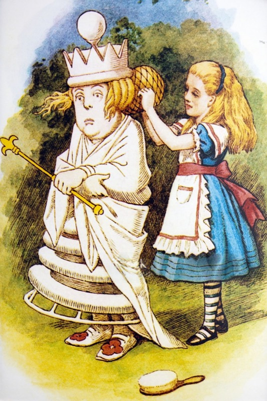

Recent work
Color, cuts and extensions from the chair at Looking Glass Salon. Real photos from the chair, shared with the owner's permission.




Color, cuts and extensions from the chair at Looking Glass Salon. Real photos from the chair, shared with the owner's permission.
